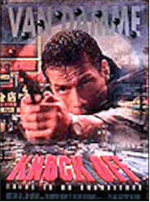
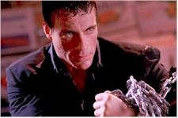
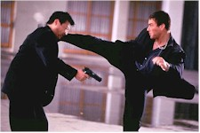

Contents | Features | Reviews | News | Archives | Store |
 |
|
| Movie Credits | Buy It! |
Knock Off
Review by Eddie Cockrell
Posted 4 September 1998
|  | Directed by Tsui Hark Starring
Jean-Claude Van Damme, Rob Schneider, Written by Steven E. de Souza |
Knock Off has much to recommend it, precious little of which is commercial. Perhaps sensing this, US distributor TriStar ripped a page from the Warner Bros. playbook and declined to screen the film -- the long holiday weekend's only major studio release -- for the press. So while it won't be as high profile a media disaster as The Avengers (Jean-Claude Van Damme movies aren't, as a rule, hotly anticipated), Knock Off is, ironically, worth seeing for the astonishing visual imagination and wit of its director, Hong Kong action veteran Tsui Hark -- who wisely keeps the action moving so fast that his wooden star (who confessed his on-set cocaine problem last week in a suspiciously timed tell-all interview) has little chance to embarrass himself in the drama department. Fans of the genre will thus eat this up, while others are advised to get some sun.
Seventy-two hours before its handover to the Chinese (a plot point that eventually means nothing beyond an excuse to show Al Gore and Chris Patton on TV monitors), Hong Kong is the backdrop for a mysterious incident, as a crate full of dolls submerged in the harbor blow up and take a number of Russian-speaking divers with it. Meanwhile, V Six Jeans sales representative Marcus Ray (Van Damme) and his motor-mouthed partner Tommy Hendricks (Rob Schneider), who have their hands full in the high-pressure world of fashion and the inevitable counterfeiting endemic to the industry (thus the title), discover an evil plot to smuggle the newly created nanobombs disguised as denim rivets (!!!) to terrorists around the world. As they reluctantly join forces with federal agents Karen Leigh (Lela Rochon) and Harry Johannson (Paul Sorvino) to fight the international conspiracy (and the inevitable hundreds of flexible henchmen employed to stop them), the two discover that nobody can be trusted -- not even each other.
The sole reason to see Knock Off is the ever-astonishing eye of director Tsui Hark, who previously worked with Van Damme on Double Team and thus understands the strong need for additional visual stimuli. Apparently anticipating audience impatience with the cookie-cutter script of Steven E. de Souza (48 Hrs., Die Hard), he's decided to sacrifice predictability -- and, it should be added, coherence -- for flair, offering a dazzling flurry of interesting and frankly cool visual touches that essentially transform the film into an art-house action epic (the picture was photographed by Arthur Wong, who worked with the director on 1993's The Iron Monkey and the seminal 1991 genre film Once Upon a Time in China). There's the camera shot that plunges through a microchip and down a telephone line (didn't Kieslowski do something like that in one of the Blue/White/Red trilogy films?); a brief and puzzling picture-within-picture effect as Van Damme reaches into a crate; the toe's eye view of a foot going into a counterfeit running shoe (a "Pumma"!); a couple of 007-ish camera barrel tricks; a shot that goes through a painting, wall, PC and monitor tube; and, incredibly, a kind of neck cam that shows a guy getting his throat cut from the inside (blink and you'll miss this one). The more conventional action set-pieces include some kind of weird rickshaw race through the streets of Kowloon, a neat if somewhat claustrophobic fight atop a careening truck, Van Damme's escape from a platoon of bad guys in a labyrinthine fruit warehouse and the final showdown on a huge cargo vessel with very slick decks (watch for flying containers). Coupled with the sheer number of camera setups and berserk editing rhythm, the cumulative effect is vertiginous, surreal and hugely entertaining on a "what-the-hell-was-that?" level (only some cheap looking visual effects mar the otherwise OK production values).
Van Damme is like that old geography gag; there's no there there. Equally uncomfortable with drama and comedy, he no longer holds the screen in this new era of charismatic men of action -- in fact, he usually looks like somebody just hit him between the eyes with a brick (more so when he's going for laughs). Schneider does his best with the wisecracking buddy role (this is a step up from Judge Dredd, anyway), while former Spuds McKenzie dancing partner Rochon apparently does a couple of her own stunts and brings a certain amount of hard-ass relish to her role, and Sorvino skates through his rare turn as a heavy. More distinctive are Michael Fitzgerald Wong ("John Woo's Once a Thief") as straight-arrow Hong Kong cop Lieutenant Han and veteran actor Glen Chin (an English dialogue coach for Jackie Chan and Jet Li) as a huge, shady businessman named Skinny.
Breathlessy kinetic trash that succeeds on cinematic chutzpah if nothing else, Knock Off didn't need Van Damme to be enjoyable -- but would be insufferable without the gleefully violent pyrotechnics and unmistakable visual style of Tsui Hark. He may not be commercial yet, but remember the name: where there's Woo, there's a way.
Contents | Features | Reviews | News | Archives | Store
Copyright © 1999 by Nitrate Productions, Inc. All Rights Reserved.